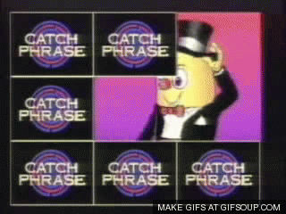
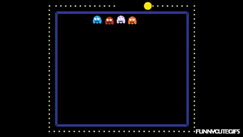
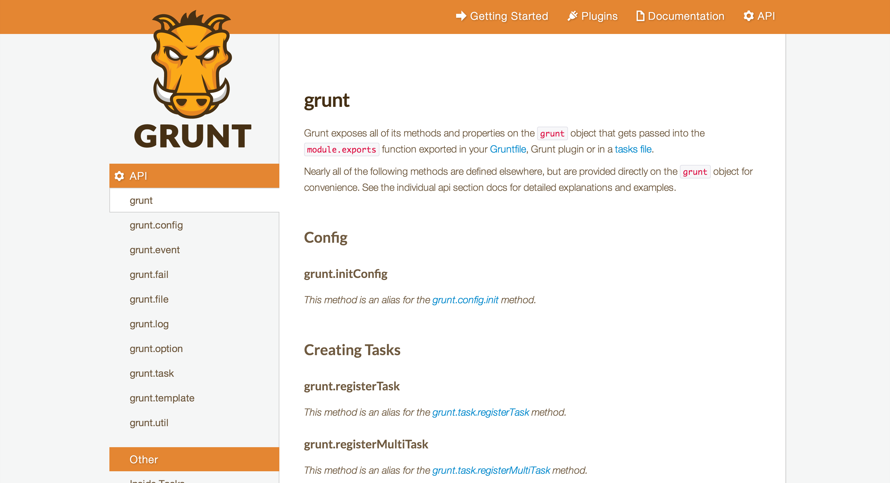
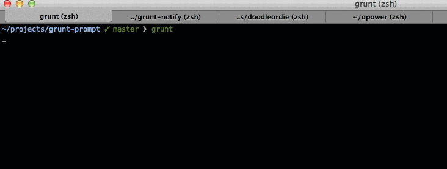
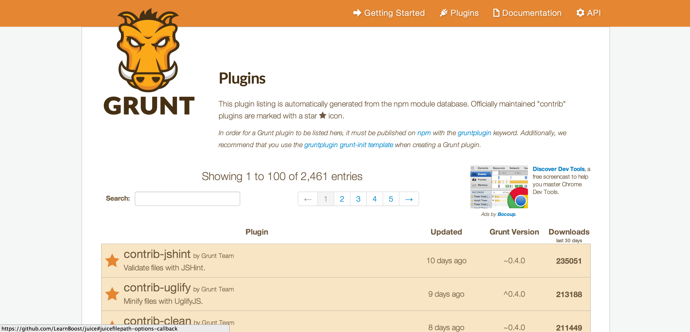

Grunting Together
Making sounds with our mouth
Created by @boyney123
Example
Grunt.js
Not making sounds with our mouth
Created by @boyney123
Welcome
Who am I?
Whats covered in this brownbag?
- What is Grunt and its benefits?
- Getting Started with Grunt and the basics
- Grunt API and creating custom tasks
- Useful plugins and resources
What is Grunt and its benefits?
Catch Phrase
Guess the software

Not comparing
Benefits of grunt
- Up and running within minutes
- Easy to use
- Automate the boring stuff
- Great community
- Its JavaScript...
Its JavaScript!

Who uses it?
How can it help me?
- JSHint
- Compress Images
- Compress JS And CSS
- Create Sprites
- Remove unused CSS
- And more...
Getting Hands On!
Installing the grunt Command Line Interface (CLI)
npm install -g grunt-cli
How the CLI works
try {
gruntpath = resolve('grunt', {basedir: basedir});
} catch (ex) {
gruntpath = findup('lib/grunt.js');
// No grunt install found!
if (!gruntpath) {
if (options.version) { process.exit(); }
if (options.help) { info.help(); }
info.fatal('Unable to find local grunt.', 99);
}
}
// Everything looks good. Require local grunt and run it.
require(gruntpath).cli();
package.json and GruntFile.js
package.json
{
"name": "my-project-name",
"version": "0.1.0",
"devDependencies": {
"grunt": "~0.4.2",
"grunt-contrib-jshint": "~0.6.3",
"grunt-contrib-nodeunit": "~0.2.0",
"grunt-contrib-uglify": "~0.2.2"
}
}
npm init //command will create basic package.json file
GruntFile.js
- Wrapper function
- Task configuration
- Loading Grunt tasks and plugins
- Custom tasks
GruntFile.js in action
//wrapper function
module.exports = function(grunt) {
// Project configuration.
grunt.initConfig({
pkg: grunt.file.readJSON('package.json'),
uglify: {
options: {
banner: '/*! <%= pkg.name %> <%= grunt.template.today("yyyy-mm-dd") %> */\n'
},
build: {
src: 'src/<%= pkg.name %>.js',
dest: 'build/<%= pkg.name %>.min.js'
}
}
});
// Load the plugin that provides the "uglify" task.
grunt.loadNpmTasks('grunt-contrib-uglify');
// Default task(s) and custom tasks
grunt.registerTask('default', ['uglify']);
};
Installing a plugin - Is Easy!
Four steps to install a plugin
- Installing using npm
- Load plugin for use in the GruntFile
- Configure plugin for use
- Use and abuse
1. Installing a plugin
npm install {plugin name} --save-dev
npm install grunt-contrib-cssmin --save-dev
2. Load plugin for use in the GruntFile
grunt.loadNpmTasks({plugin name});
grunt.loadNpmTasks('grunt-contrib-cssmin');
3. Configure plugin for use
//wrapper function
module.exports = function(grunt) {
// Project configuration.
grunt.initConfig({
pkg: grunt.file.readJSON('package.json'),
uglify: {
options: {
banner: '/*! <%= pkg.name %> <%= grunt.template.today("yyyy-mm-dd") %> */\n'
},
build: {
src: 'src/<%= pkg.name %>.js',
dest: 'build/<%= pkg.name %>.min.js'
}
},
//Minify all contents of a release directory and add a .min.css extension
cssmin: {
minify: {
expand: true,
cwd: 'release/css/',
src: ['*.css', '!*.min.css'],
dest: 'release/css/',
ext: '.min.css'
}
}
});
// Load the plugin that provides the "uglify" task.
grunt.loadNpmTasks('grunt-contrib-uglify');
// Load the css min
grunt.loadNpmTasks('grunt-contrib-cssmin');
// Default task(s) and custom tasks
grunt.registerTask('default', ['uglify', 'cssmin']);
// New task to just minify the css
grunt.registerTask('css', ['cssmin']);
};
4. Use and Abuse
grunt
grunt css
Grunt API
Useful Plugins
grunt-contrib-watch
Run predefined tasks whenever watched file patterns are added, changed or deleted.
npm install grunt-contrib-watch --save-dev
grunt.loadNpmTasks('grunt-contrib-watch');
watch: {
scripts: {
files: ['**/*.js'],
tasks: ['jshint'],
options: {
spawn: false,
},
},
},
grunt-prompt
Interactive prompt for your Grunt config using console checkboxes, text input with filtering, password fields.
npm install grunt-prompt --save-dev
grunt.loadNpmTasks('grunt-prompt');
grunt.initConfig({
prompt: {
target: {
options: {
questions: [
{
config: 'config.name', // arbitray name or config for any other grunt task
type: '', // list, checkbox, confirm, input, password
message: 'Question to ask the user',
default: 'value', // default value if nothing is entered
choices: 'Array|function(answers)',
validate: function(value), // return true if valid, error message if invalid
filter: function(value), // modify the answer
when: function(answers) // only ask this question when this function returns true
}
]
}
},
},
})
grunt-prompt in action
grunt-uncss
A grunt task for removing unused CSS from your projects. Works across multiple files and supports dynamically injected CSS via PhantomJS.
npm install grunt-uncss --save-dev
grunt.loadNpmTasks('grunt-uncss');
uncss: {
dist: {
files: {
'dist/css/tidy.css': ['app/index.html','app/about.html']
}
}
}
grunt-contrib-imagemin
Minify PNG, JPEG and GIF images
npm install grunt-contrib-imagemin --save-dev
grunt.loadNpmTasks('grunt-contrib-imagemin');
grunt.initConfig({
imagemin: { // Task
static: { // Target
options: { // Target options
optimizationLevel: 3
},
files: { // Dictionary of files
'dist/img.png': 'src/img.png', // 'destination': 'source'
'dist/img.jpg': 'src/img.jpg',
'dist/img.gif': 'src/img.gif'
}
},
dynamic: { // Another target
files: [{
expand: true, // Enable dynamic expansion
cwd: 'src/', // Src matches are relative to this path
src: ['**/*.{png,jpg,gif}'], // Actual patterns to match
dest: 'dist/' // Destination path prefix
}]
}
}
});
grunt.loadNpmTasks('grunt-contrib-imagemin');
grunt.registerTask('default', ['imagemin']);
grunt-inline-css
Takes an html file with css link and turns inline. Great for emails. It leverages the amazing juice library.
npm install grunt-inline-css --save-dev
grunt.loadNpmTasks('grunt-inline-css');
grunt.initConfig({
inlinecss: {
main: {
options: {
},
files: {
'out.html': 'in.html'
}
}
}
})
http://gruntjs.com/plugins
gruntjs.com
@gruntjs
@gruntweekly
Summary
- Easy to setup and use
- Its based on the one thing with love to play with during the day and at night... JavaScript
- Huge community
- Automation is key
- Work less and do more
- I look good in a wedding dress